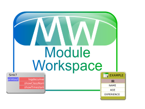

Dieses Mal ist es noch keine konkrete Roadmap, sondern nur einige Vorüberlegungen: die ModuleWorkspace-Komponente - unter anderem verwendet in der sQLshell und im Rapid-Prototyping-Werkzeug dWb+ erlaubt es zur Zeit nicht, bestehende Verbindungen zu verlegen, also an einen anderen Aus- oder Eingang zu koppeln - das könnte sich bald ändern...

In letzter Zeit arbeite ich öfters in Workspaces in denen ich bereits eingerichtete Verbindungen ändern - also sie von dem bisherigen Slot ab- und an einen anderen ankoppeln müsste.Dies funktioniert zur Zeit nicht - man muss die Verbindung löschen oder deaktivieren und statt ihrer eine neue einrichten. Prinzipiell ist damit der Use Case (oder die User Story oder was auch immer) erledigt - aber es ist keine elegante Lösung.
Daher habe ich mir überlegt, dass es schön wäre, wenn dieses "Abstöpseln" von Verbindungen möglich wäre.
Dabei kam mir auch gleich der Gedanke, dass zur Zeit beim Erstellen von Verbindungen per Drag'n'Drop keine visuelle Entsprechung während des Ziehens existiert. Es wäre schöner, wenn man dabei quasi auch bereits "den Schlauch hinter sich her zieht".
Das Abstöpseln bietet natürlich einige Herausforderungen - als ein Beispiel sei hier nur genannt, dass ja mehrere Verbindungen in einen Input-Slot eingehen können. Wenn man das Abstöpseln jetzt per Drag'n'Drop lösen wollte, müsste man diese Mehrdeutigkeit irgendwie auflösen - man will ja wahrscheinlich eher selten alle 4 (oder wie viele es auch immer sind) Verbindungen neu verlegen.
Man sieht also - viele Herausforderungen, die gelöst werden wollen... Mögliche Lösungen, die auf ihre Praktikabilität hin untersucht werden müssen, sind:
- Neuer Workspace-Modus zum Umlegen der Verbindungen
- MouseOver über Slot stellt Lupenansicht dar, in der die Verbindungen einzeln selektierbar sind
- Abstöpseln erfolgt nicht über Slot sondern über Verbindungskontextmenü